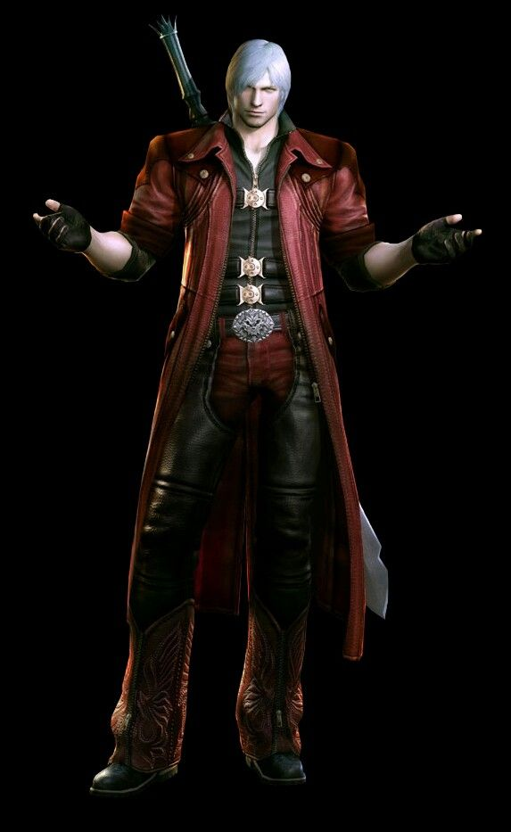
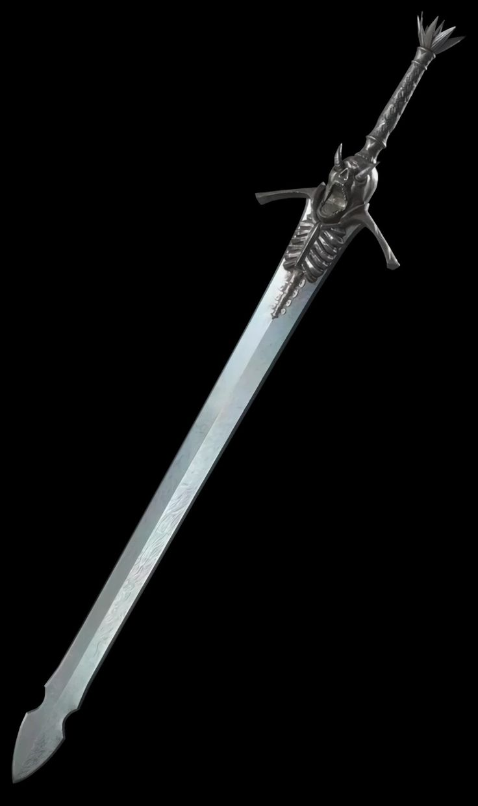

Биография
Данте -- младший брат-близнец Вергилий, который долгое время был одним из главных антагонистов серии Devil May Cry. После переломного момента пути Вергилия и Данте разошлись, первый отверг свою человечность, и принял демоническое наследие их отца, второй же поступил совершенно иначе, поставив на первое место человеческое в себе.
В отличие от Вергилия, Данте более позитивный, резвый и наивный.
Боевой стиль
Орудует легендарным мечом «Мятежник», он является его основным оружием и символом силы, а также ключом к раскрытию демонического потенциала.


Мятежник
Мятежник — легендарный меч Данте и один из самых известных реликвий во вселенной Devil May Cry. Клинок когда-то принадлежал Спарде и был передан Данте как символ его наследия.
Клинок не признавал ни божественных скрижалей, ни дьявольских пут. Это был не просто кусок закаленной стали, отлитый в адском пламени — это был выплеснутый гнев, застывший в форме меча. Он не выносил слабости: стоило Данте засомневаться, клинок становился неподъемной глыбой. Но стоило в груди демона вспыхнуть ярость свободного человека, как «Мятеж» превращался в продолжение позвоночника — быстрый, страшный, неудержимый.
Но истинная суть клинка раскрывалась в бою. «Мятеж» не пел, как благородные рапиры, и не гудел басом, как палаши рыцарей. Он рычал. Рассекая воздух, он оставлял за собой багровый росчерк — как удар кнута по реальности. В руках Данте это был не инструмент правосудия, а стихия. Меч вращался бешеным пропеллером, врубался в землю, поднимая фонтаны искр, и летел следом за хозяином в пропасть, послушный даже на расстоянии.
Он не был красивым. Он был правдивым. Сломанный, но цельный, как и его хозяин. Тот, кого невозможно заковать в цепи.